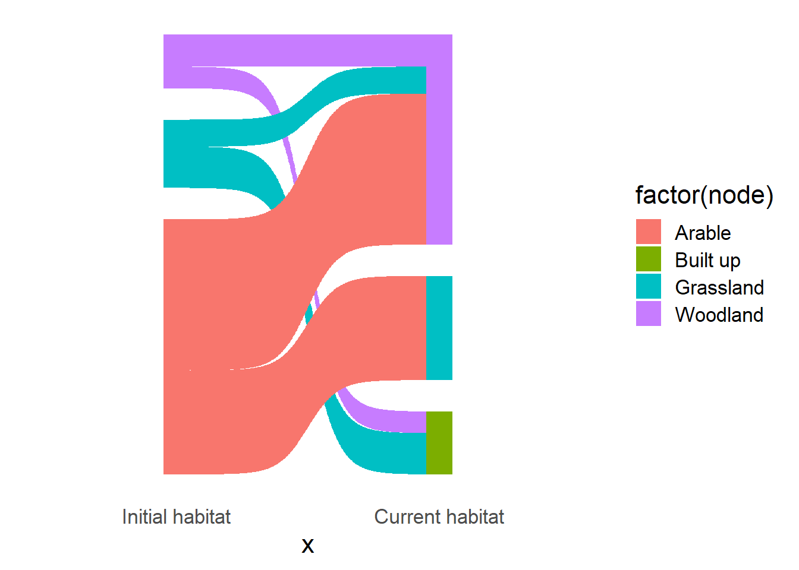

Firstly we load in our libraries and the data. I use the tidyverse a lot for data cleaning
and visualisation, dplyr (data wrangling),
tidyr (data tidying), ggplot2 (data
visualisation), stringr for working with character strings
and readr (data reading) all belong to the same family of
packages. ggsankey is separate but complementary, and will
need to be installed from github as opposed to CRAN.
# devtools::install_github("davidsjoberg/ggsankey")
library(ggsankey)
library(dplyr)
library(readr)
library(tidyr)
library(stringr)
library(ggplot2)
data <- readr::read_csv("data/habitat_change.csv")
dplyr::glimpse(data)## Rows: 15
## Columns: 4
## $ id [3m[38;5;246m<dbl>[39m[23m 1, 2, 3, 4, 5, 6, 7, 8, 9, 10, 11, 12, 13, 14, 15
## $ before [3m[38;5;246m<chr>[39m[23m "woodland", "woodland", "woodland", "arable", "arable", "arable", "arable", "a…
## $ after [3m[38;5;246m<chr>[39m[23m "woodland", "woodland", "built up", "grassland", "grassland", "grassland", "gr…
## $ area [3m[38;5;246m<dbl>[39m[23m 10, 8, 12, 11, 4, 8, 24, 11, 12, 17, 15, 19, 21, 23, 15Whenever I read a dataset into R, I tend to use
dplyr::glimpse to get a look at the data. There are various
ways to do this in R Studio, but I find glimpse to be the quickest and
easiest. This example is a fairly typical of habitat data, one before
the transition and one after. This could be an extract from the CEH Land
Use Change dataset, or a Biodiversity Net Gain proposal.
In order for ggsankey to run properly, we first need to
use tidyr::uncount to convert the dataset so that 1 row = 1
unit, in this fictional case 1 row = 1 hectare. This function is similar
to pivot_longer but works better for this situation. We’re
also going to tidy up the data so that the presentation is easier to
digest for non-data audiences. before and
after are useful column names for me, they’re description,
lower case and 1 word, meaning they’re easy to work with in R. However,
they could be far more descriptive for a visualiation, so I have changed
them to Initial habitat and Current habitat.
When putting a space within a column name in R (which is not recommended
until you get to the stage to put it in a graph or table) you must label
it with back-ticks - ``. We will also convert the habitat to sentance
case so that the outputs in our legend are capitalised.
data_processed <- data %>%
dplyr::group_by(before, after) %>%
tidyr::uncount(area) %>%
dplyr::ungroup() %>%
dplyr::mutate(`Initial habitat` = stringr::str_to_sentence(before),
`Current habitat` = stringr::str_to_sentence(after))
dplyr::glimpse(data_processed)## Rows: 210
## Columns: 5
## $ id [3m[38;5;246m<dbl>[39m[23m 1, 1, 1, 1, 1, 1, 1, 1, 1, 1, 2, 2, 2, 2, 2, 2, 2, 2, 3, 3, 3, 3, 3…
## $ before [3m[38;5;246m<chr>[39m[23m "woodland", "woodland", "woodland", "woodland", "woodland", "woodla…
## $ after [3m[38;5;246m<chr>[39m[23m "woodland", "woodland", "woodland", "woodland", "woodland", "woodla…
## $ `Initial habitat` [3m[38;5;246m<chr>[39m[23m "Woodland", "Woodland", "Woodland", "Woodland", "Woodland", "Woodla…
## $ `Current habitat` [3m[38;5;246m<chr>[39m[23m "Woodland", "Woodland", "Woodland", "Woodland", "Woodland", "Woodla…Then we run the ggsankey::make_long function, which
formats the data specifically to create the graph. Some R packages will
do this if they need the data in a specific way. Then we can create our
basic sankey graph, showing the transition from one habitat to
another.
data_long <- data_processed %>%
ggsankey::make_long(`Initial habitat`, `Current habitat`)
sankey_plot <- ggplot2::ggplot(data_long,
ggplot2::aes(x = x, next_x = next_x, node = node,
next_node = next_node, fill = factor(node))) +
ggsankey::geom_sankey() +
ggsankey::theme_sankey(base_size = 16)
sankey_plot
The great thing about ggplot2 is that you’re able to
layer more and more custom options on top of each other, allowing you to
programmatically find the right look for your graph and then repeat this
across other, similar plots. Using your organisations’s brand colour
scheme, fonts, etc. is a great way to make reports more aligned and
professional. However, it is also essential to make sure that your
visualisation is accessible to those with colourblindness.
In the absence of a colourblind friendly brand palette, I would recommend using the Okabe-Ito palette for discrete datasets, and Viridis for continous. I’ve experimented with a lot of palettes and find these two to be the most accessible and stylish. The land uses in my dummy data come directly from the CEH Land Cover Map, and I have actually created a colourblind friendly palette for these categories downloaded as a QGIS QML file here.
We will also make some more quality of life changes. The x axis label is not neccessary due to our informative naming of the columns earlier and we need to rename the legend title.
sankey_plot <- sankey_plot +
ggokabeito::scale_fill_okabe_ito() +
ggplot2::labs(x = "", fill = "Habitat")
sankey_plotThere we are! A reasonably professional and fairly novel way to show a habitat transition. Obviously there is far more we can do, but for now I would be quite happy to include that within a project report or dashboard.